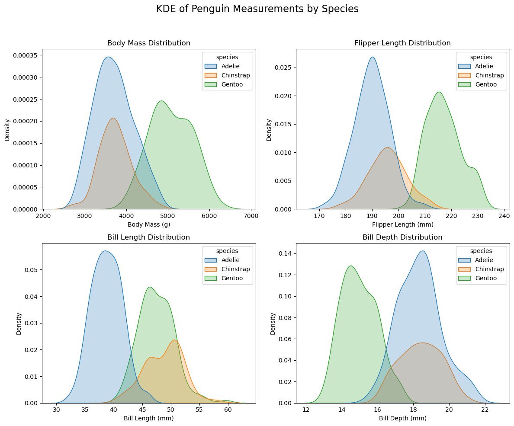
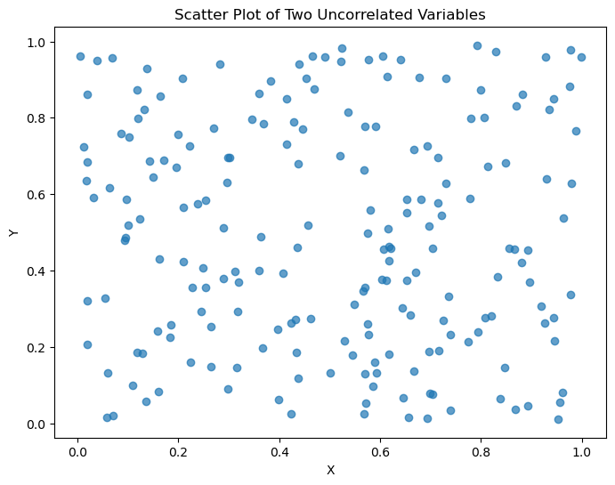
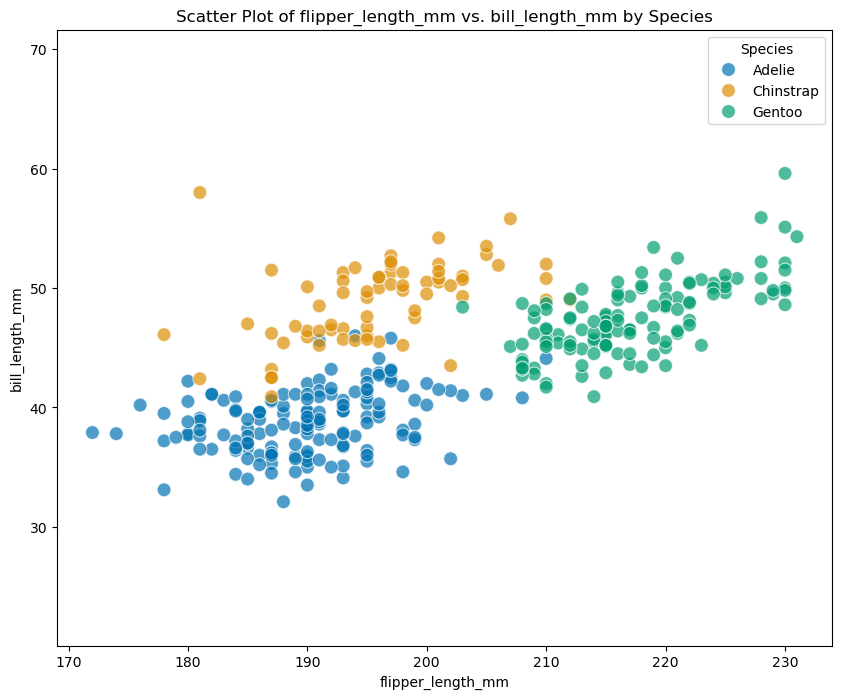
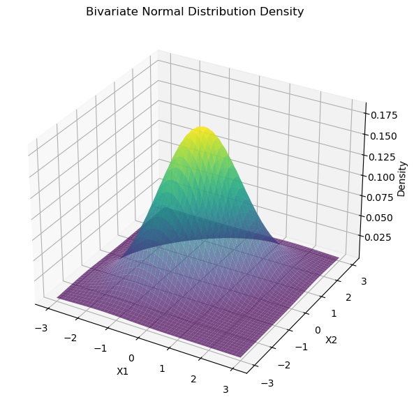

from scipy.stats import multivariate_normal
import plotly.graph_objs as go
import plotly.io as pio
pio.renderers.default = "notebook"
import numpy as np
import matplotlib.pyplot as plt
import seaborn as sns
from scipy.stats import norm
from collections import Counter
def normalize_array(arr):
return np.array([i/np.sum(arr) for i in arr])8 分类
这一章我们学习如何用贝叶斯统计来做分类。
8.1 数据
使用 scipy：
norm.pdf(x, loc, scale)可以得到正态分布 \(\mathcal{N}(\text{loc}, \text{scale}^2)\) 在 \(x\) 的密度值。所以 loc 是 \(\mu\)、scale 是 \(\sigma\).
我们这次需要再次用到 penguins 这个数据 (Gorman, Williams, and Fraser (2014))。
我们需要确保 body_mass_g 不为空。
penguins = sns.load_dataset("penguins")
penguins = penguins.dropna(subset=['body_mass_g'])
penguins.head()| species | island | bill_length_mm | bill_depth_mm | flipper_length_mm | body_mass_g | sex | |
|---|---|---|---|---|---|---|---|
| 0 | Adelie | Torgersen | 39.1 | 18.7 | 181.0 | 3750.0 | Male |
| 1 | Adelie | Torgersen | 39.5 | 17.4 | 186.0 | 3800.0 | Female |
| 2 | Adelie | Torgersen | 40.3 | 18.0 | 195.0 | 3250.0 | Female |
| 4 | Adelie | Torgersen | 36.7 | 19.3 | 193.0 | 3450.0 | Female |
| 5 | Adelie | Torgersen | 39.3 | 20.6 | 190.0 | 3650.0 | Male |
print(penguins.shape)(342, 7)我们的目标是用下面的四个 predictors 来预测 species：
predictors = list(penguins.columns[2:-1])
predictors['bill_length_mm', 'bill_depth_mm', 'flipper_length_mm', 'body_mass_g']species = penguins.species.unique()
speciesarray(['Adelie', 'Chinstrap', 'Gentoo'], dtype=object)我们先来看一下这四个自变量的分布：
Code
# <!-- fig-penguin-distribution -->
# Set up the 2x2 grid for KDE plots
fig, axes = plt.subplots(2, 2, figsize=(12, 10))
fig.suptitle("KDE of Penguin Measurements by Species", fontsize=16)
# KDE plot 1: Body Mass
sns.kdeplot(data=penguins, x="body_mass_g", hue="species", ax=axes[0, 0], fill=True)
axes[0, 0].set_title("Body Mass Distribution")
axes[0, 0].set_xlabel("Body Mass (g)")
axes[0, 0].set_ylabel("Density")
# KDE plot 2: Flipper Length
sns.kdeplot(data=penguins, x="flipper_length_mm", hue="species", ax=axes[0, 1], fill=True)
axes[0, 1].set_title("Flipper Length Distribution")
axes[0, 1].set_xlabel("Flipper Length (mm)")
axes[0, 1].set_ylabel("Density")
# KDE plot 3: Bill Length
sns.kdeplot(data=penguins, x="bill_length_mm", hue="species", ax=axes[1, 0], fill=True)
axes[1, 0].set_title("Bill Length Distribution")
axes[1, 0].set_xlabel("Bill Length (mm)")
axes[1, 0].set_ylabel("Density")
# KDE plot 4: Bill Depth
sns.kdeplot(data=penguins, x="bill_depth_mm", hue="species", ax=axes[1, 1], fill=True)
axes[1, 1].set_title("Bill Depth Distribution")
axes[1, 1].set_xlabel("Bill Depth (mm)")
axes[1, 1].set_ylabel("Density")
# Adjust layout
plt.tight_layout(rect=[0, 0, 1, 0.95])
plt.show()
8.2 原理
我们想要的是 \(P(\text{Species}| \text{Data})\)，依据贝叶斯定理：
\[P(\text{Species}| \text{Data}) \propto P(\text{Species}) \cdot P(\text{Data}|\text{Species})\]
这里 Data 可以是一组数，比如四个自变量的值，也可以是一个数，也就是一个自变量的值。我们先来处理只有一个数据点，也就是我们只知道一个自变量的情况。
先来看 \(P(\text{Species})\)，也就是先验概率：在我们什么数据都没有的情况下，预测三者的概率。
第一个选择是 Uniform prior:
# prior of species
prior = dict(zip(species, np.array([1/3]*3)))
prior {'Adelie': 0.3333333333333333,
'Chinstrap': 0.3333333333333333,
'Gentoo': 0.3333333333333333}第二个选择是 Empirical prior:
total = len(penguins)
empirical_prior = {
species: count/total for species, count in Counter(
penguins.species).items()}
empirical_prior{'Adelie': 0.4415204678362573,
'Chinstrap': 0.19883040935672514,
'Gentoo': 0.35964912280701755}那如何求 \(P(\text{Data}|\text{Species})\)？
Data 是一个数字。比如，我们知道了 ‘flipper_length_mm’: 193。如何知道这个数字对于 ‘Adelie’ 来说，概率多大？
通过上图 (KDE of Penguin Measurements by Species)，我们看到各个分布基本符合正态分布。那我们用 penguins 中 ‘Adelie’ 所有的 ‘flipper_length_mm’ 数据，计算出平均值和标准差，就可以估算出 ‘Adelie’ 之 ‘flipper_length_mm’ 的正态分布。对其他的 Species 也一样。这样，对于 ‘flipper_length_mm’: 193 我们就可以算出三个 Species 相对应的 Density，这就是似然。
我们先来把所有的变量的参数算出来：
def get_all_dist(penguins, predictors):
res = {}
for s, group_data in penguins.groupby("species"):
dic = {}
# res[s] = dic
for p in predictors:
dic[p] = {}
data = group_data[p]
mu = np.mean(data)
sigma = np.std(data)
dic[p]['mean'] = mu
dic[p]['sigma'] = sigma
res[s] = dic
return reslikelihood = get_all_dist(penguins, predictors)
likelihood{'Adelie': {'bill_length_mm': {'mean': 38.79139072847682,
'sigma': 2.654570977106625},
'bill_depth_mm': {'mean': 18.34635761589404, 'sigma': 1.2126144287882996},
'flipper_length_mm': {'mean': 189.95364238410596,
'sigma': 6.517767614763347},
'body_mass_g': {'mean': 3700.662251655629, 'sigma': 457.04517271224495}},
'Chinstrap': {'bill_length_mm': {'mean': 48.83382352941177,
'sigma': 3.314611604171021},
'bill_depth_mm': {'mean': 18.42058823529412, 'sigma': 1.1270156874957824},
'flipper_length_mm': {'mean': 195.8235294117647, 'sigma': 7.079259633253841},
'body_mass_g': {'mean': 3733.0882352941176, 'sigma': 381.4986213564681}},
'Gentoo': {'bill_length_mm': {'mean': 47.50487804878048,
'sigma': 3.0693039294185516},
'bill_depth_mm': {'mean': 14.98211382113821, 'sigma': 0.9772229210631793},
'flipper_length_mm': {'mean': 217.1869918699187,
'sigma': 6.4585603287620605},
'body_mass_g': {'mean': 5076.016260162602, 'sigma': 502.0628014961637}}}然后，先验与似然相乘，再标准化 (Normalize) 一下，就是 Posterior 了：
def update_post(varname, varvalue, prior, likelihood):
res = {}
for s, s_prior in prior.items():
mu = likelihood[s][varname]['mean']
sigma = likelihood[s][varname]['sigma']
pdf = norm.pdf(varvalue, loc = mu, scale = sigma)
res[s] = s_prior * pdf
normalized_res_values = normalize_array(np.array(list(res.values())))
res = dict(zip(res.keys(), normalized_res_values))
return res post_flipper = update_post('flipper_length_mm', 193, prior, likelihood)
post_flipper{'Adelie': 0.5129670276270746,
'Chinstrap': 0.48651288781448715,
'Gentoo': 0.0005200845584382924}我们看到，结果显示，在 flipper_length_mm’: 193 这一数据下，结果几乎不可能是 Gentoo，但我们没办法确认到底是 Adelie 还是 Chinstrap，这一点从上图中也可以反映出来。
那如果我们有另外一个数据呢？比如，‘bill_length_mm’:48。我们依然可以用先验与似然相乘。但是这里要注意的是，这里的先验是我们上面的结果，post_flipper:
post_flipper_bill_length = update_post(
'bill_length_mm', 48, post_flipper, likelihood)
post_flipper_bill_length{'Adelie': 0.003297190719649734,
'Chinstrap': 0.9955319128234549,
'Gentoo': 0.0011708964568953224}我们看到，几乎可以肯定是 ‘Chinstrap’。
那我们来看一下如何直接使用多个数据：
data = {
'flipper_length_mm': 193,
'bill_length_mm': 48
}def update_naive(data, prior, likelihood):
posterior = prior.copy()
for varname, varvalue in data.items():
posterior = update_post(varname, varvalue, posterior, likelihood)
return posteriorres = update_naive(data, prior, likelihood)
res {'Adelie': 0.003297190719649734,
'Chinstrap': 0.9955319128234549,
'Gentoo': 0.0011708964568953224}结果和上面一样。
8.3 朴素贝叶斯分类 (Naive Bayesian Classification)
接下来，我们对 penguins 中每一行进行预测：
penguins['Classification'] = 'None'
for i, row in penguins.iterrows():
data = dict(row[predictors])
res = update_naive(data, prior, likelihood)
pred = max(res, key = res.get)
penguins.loc[i, 'Classification'] = pred penguins.head()| species | island | bill_length_mm | bill_depth_mm | flipper_length_mm | body_mass_g | sex | Classification | |
|---|---|---|---|---|---|---|---|---|
| 0 | Adelie | Torgersen | 39.1 | 18.7 | 181.0 | 3750.0 | Male | Adelie |
| 1 | Adelie | Torgersen | 39.5 | 17.4 | 186.0 | 3800.0 | Female | Adelie |
| 2 | Adelie | Torgersen | 40.3 | 18.0 | 195.0 | 3250.0 | Female | Adelie |
| 4 | Adelie | Torgersen | 36.7 | 19.3 | 193.0 | 3450.0 | Female | Adelie |
| 5 | Adelie | Torgersen | 39.3 | 20.6 | 190.0 | 3650.0 | Male | Adelie |
valid = penguins['Classification'].notna()
valid.sum()342same = penguins['species'] == penguins['Classification']
same.sum()331same.sum() / valid.sum()0.9678362573099415我们再来看一下如果用 Empirical prior 结果会如何：
penguins['Classification'] = 'None'
for i, row in penguins.iterrows():
data = dict(row[predictors])
res = update_naive(data, empirical_prior, likelihood)
pred = max(res, key = res.get)
penguins.loc[i, 'Classification'] = pred
valid = penguins['Classification'].notna()
same = penguins['species'] == penguins['Classification']
same.sum() / valid.sum()0.9707602339181286我们看到用 Empirical prior 的结果更好一些。
8.4 联合分布 (Join Distribution)
现在我们来反思一下。如果我们的数据是 \(X_1, X_2, ..., X_n\)，某一 Species 我们记为 \(C\)。那根据最基本的概率知识，我们也知道，如果 \(X_1, X_2, ..., X_n\) 之间彼此独立，那么：
\[P(X_1, X_2, ..., X_n|C) = P(X_1|C) \cdot P(X_2|C) \cdots P(X_n|C)\]
所以：
\[ P(C|X_1, X_2, ..., X_n) \propto P(C) \cdot P(X_1, X_2, ..., X_n|C) \tag{8.1}\]
但问题是，「\(X_1, X_2, ..., X_n\) 之间彼此独立」这一点未必站得住脚。
如果两个变量完全不相关，结果会是这样：
Code
np.random.seed(0)
x = np.random.rand(200)
y = np.random.rand(200)
plt.figure(figsize=(8,6))
plt.scatter(x, y, alpha = 0.7)
plt.xlabel('X')
plt.ylabel('Y')
plt.title('Scatter Plot of Two Uncorrelated Variables')
plt.show()
但是在 penguins 这一数据中，我们拿 flipper_length_mm 和 bill_length_mm 来举例子：
Code
def scatterplot(df, var1, var2):
plt.figure(figsize=(10,8))
sns.scatterplot(
data = df,
x = var1,
y = var2,
hue='species',
palette='colorblind',
s = 100,
alpha = 0.7
)
plt.xlim(0)
plt.ylim(0)
plt.axis("equal")
plt.xlabel(var1)
plt.ylabel(var2)
plt.title(f'Scatter Plot of {var1} vs. {var2} by Species')
plt.legend(title = "Species")
plt.show()scatterplot(penguins, predictors[2], predictors[0])
很明显，对于每一个 Species 来说，这两个变量很明显是相关的，而不是完全不相关。
那对于两个相关的变量
\[P(X_1, X_2|C) = P(X_1|C) \cdot P(X_2|C)\]
并不成立。正确的计算方法是：
\[P(X_1, X_2|C) = P(X_1|C) \cdot P(X_2|X_1, C)\]
我们来举一个例子：
- \(S\): 夏天
- \(W\): 晴天 (1) 还是阴天 (0)
- \(H\)；喝热饮 (1)或者不喝 (0)
我们现在知道：
- \(P(W=1|S) = 0.7\)
- \(P(W=0|S) = 0.3\)
- \(P(H=1 | W=1, S) = 0.2\)
- \(P(H=1 | W=0, S) = 0.6\)
这里首先要立即，夏天+天晴的时候喝热饮 和 夏天+阴天的时候喝热饮 这两者是相互独立的，两者相加之和并不保证为 1。
现在我们首先来看一下如何计算 \(P(H=1|S)\):
\[P(H=1 | W=1, S) \cdot P(W=1|S) + P(H=1 | W=0, S) * P(W=0|S) = 0.32\]
0.7*0.2 + 0.3*0.60.31999999999999995我们现在知道了
- \(P(H=1|S) = 0.32\)
我们现在想看看
\[P(H=1,W=1|S) = P(W=1|S) \cdot P(H=1|S)\]
和
\[P(H=1,W=1|S) = P(W=1|S) \cdot P(H=1|W=1, S)\]
这两个到底哪个对。
我们用编程来模拟一万天的记录：
Code
n_samples = 10**4
p_sunny_given_summer = 0.7
p_drink_given_sunny = 0.2
p_drink_given_cloudy = 0.6
weather = np.random.choice(
[1,0],
size = n_samples,
p = [p_sunny_given_summer,
1- p_sunny_given_summer]
)
drink = np.zeros(n_samples)
drink[weather == 1] = np.random.choice(
[1,0], size = (weather==1).sum(),
p=[p_drink_given_sunny, 1-p_drink_given_sunny])
drink[weather == 0] = np.random.choice(
[1,0], size = (weather==0).sum(),
p=[p_drink_given_cloudy, 1-p_drink_given_cloudy])
joint_prob_actual = ((weather==1) & (drink==1)).sum() / n_samples
print(f"夏天晴天且喝热饮的真实概率是 {joint_prob_actual}。")
p_h_given_s = drink.sum()/n_samples
p_w_given_s = p_sunny_given_summer
joint_prob_independence = p_w_given_s * p_h_given_s
print(f"用 P(W=1 | S) * P(H=1 | S) 算出的结果是: {joint_prob_independence}")
joint_prob_correct = p_w_given_s * p_drink_given_sunny
print(f"用 P(W=1 | S) * P(H=1 | W=1, S) 算出的结果是: {joint_prob_correct}")夏天晴天且喝热饮的真实概率是 0.1469。
用 P(W=1 | S) * P(H=1 | S) 算出的结果是: 0.22518999999999997
用 P(W=1 | S) * P(H=1 | W=1, S) 算出的结果是: 0.13999999999999999所以
\[P(H=1,W=1|S) = P(W=1|S) \cdot P(H=1|W=1, S)\]
才是正确的做法。
回到 penguins 这个数据，因为自变量之间并非相互独立，正确的计算方法是
\[P(X_1, X_2, ..., X_n|C) = P(X_1|C) \cdot P(X_2|X_1, C) \cdots P(X_n|X_1, X_2, ... X_{n-1}, C) \tag{8.2}\]
我们把 \(P(X_1, X_2, ..., X_n|C)\) 称为联合概率密度 (Joint probability density) 或者简称为联合密度 (Joint density)。
如果我们只有两个自变量。那密度值是 Z 轴的取值。密度的积分为 1。
Code
# Define mean and covariance for a bivariate normal distribution
mean = [0, 0] # Centered at origin
covariance = [[1, 0.5], [0.5, 1]] # Covariance matrix with some correlation
# Create a grid of points in the x and y range
x = np.linspace(-3, 3, 100)
y = np.linspace(-3, 3, 100)
X, Y = np.meshgrid(x, y)
pos = np.dstack((X, Y))
# Calculate the bivariate normal density at each grid point
rv = multivariate_normal(mean, covariance)
Z = rv.pdf(pos)
# Plotting the density function
fig = plt.figure(figsize=(10, 7))
ax = fig.add_subplot(111, projection='3d')
# Surface plot
ax.plot_surface(X, Y, Z, cmap='viridis', edgecolor='none', alpha=0.7)
# Labels and title
ax.set_xlabel('X1')
ax.set_ylabel('X2')
ax.set_zlabel('Density')
ax.set_title('Bivariate Normal Distribution Density')
plt.show()
# # Generate the 3D surface plot using Plotly
# surface = go.Surface(x=X, y=Y, z=Z, colorscale='Viridis')
# layout = go.Layout(
# title="Bivariate Normal Distribution Density (3D Surface)",
# scene=dict(
# xaxis_title="X1",
# yaxis_title="X2",
# zaxis_title="Density"
# )
# )
# fig = go.Figure(data=[surface], layout=layout)
# # Display the interactive plot
# fig.show()
我们暂时不去推导具体的公式。目前我们只需要知道，如果有四个自变量 \(X_1, X_2, X_3, X_4\)，「均值向量」是 mean_vector，「协方差矩阵」为 covariance_matrix。给定具体的数据 data。那么
from scipy.stats import multivariate_normal
rv = multivariate_normal(mean=mean_vector, cov=covariance_matrix)
Z = rv.pdf(data)便可计算联合概率密度，也就是 \(P(X_1, X_2, ..., X_n|C)\)。
在这种情况下，四个变量构成了四个相互不独立的高斯分布。由此产生的多变量分布称为「多元正态分布」(multivariate normal distribution)。
8.5 使用多元正态分布
接下来，我们使用多元正态分布来做分类。
我们首先对不同的 Species 计算出相对应的均值向量和协方差矩阵：
mean_cov_dic = {} # key is species and value is mean and cov
for s, group in penguins.groupby('species'):
mean_vector = group[predictors].mean().values
covariance_matrix = group[predictors].cov().values
mean_cov_dic[s] = {
'mean': mean_vector,
'cov': covariance_matrix
}然后我们把 Equation 8.1 和 Equation 8.2 联合起来用。
def update_multivarate_normal(data, prior, mean_cov_dic):
res = {}
for s, s_prior in prior.items():
mean_vector = mean_cov_dic[s]['mean']
covariance_matrix = mean_cov_dic[s]['cov']
rv = multivariate_normal(mean=mean_vector, cov=covariance_matrix)
z = rv.pdf(data)
res[s] = s_prior * z
normalized_res_values = normalize_array(np.array(list(res.values())))
res = dict(zip(res.keys(), normalized_res_values))
return res penguins['Classification2'] = 'None'
for i, row in penguins.iterrows():
data = row[predictors]
res = update_multivarate_normal(data, prior, mean_cov_dic)
pred = max(res, key = res.get)
penguins.loc[i, 'Classification2'] = pred penguins.head()| species | island | bill_length_mm | bill_depth_mm | flipper_length_mm | body_mass_g | sex | Classification | Classification2 | |
|---|---|---|---|---|---|---|---|---|---|
| 0 | Adelie | Torgersen | 39.1 | 18.7 | 181.0 | 3750.0 | Male | Adelie | Adelie |
| 1 | Adelie | Torgersen | 39.5 | 17.4 | 186.0 | 3800.0 | Female | Adelie | Adelie |
| 2 | Adelie | Torgersen | 40.3 | 18.0 | 195.0 | 3250.0 | Female | Adelie | Adelie |
| 4 | Adelie | Torgersen | 36.7 | 19.3 | 193.0 | 3450.0 | Female | Adelie | Adelie |
| 5 | Adelie | Torgersen | 39.3 | 20.6 | 190.0 | 3650.0 | Male | Adelie | Adelie |
valid = penguins['Classification2'].notna()
same = penguins['species'] == penguins['Classification2']
same.sum() / valid.sum()0.9912280701754386我们可以看到准确里提高到了 99%。